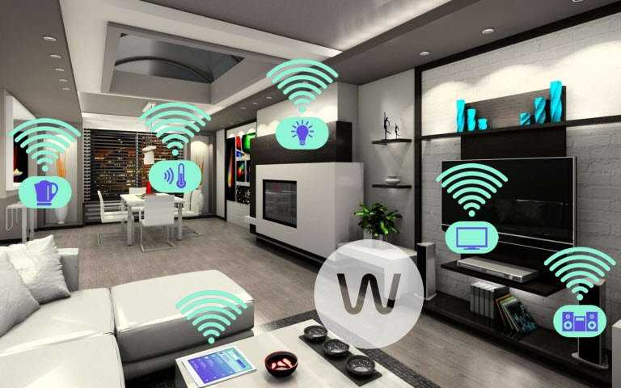
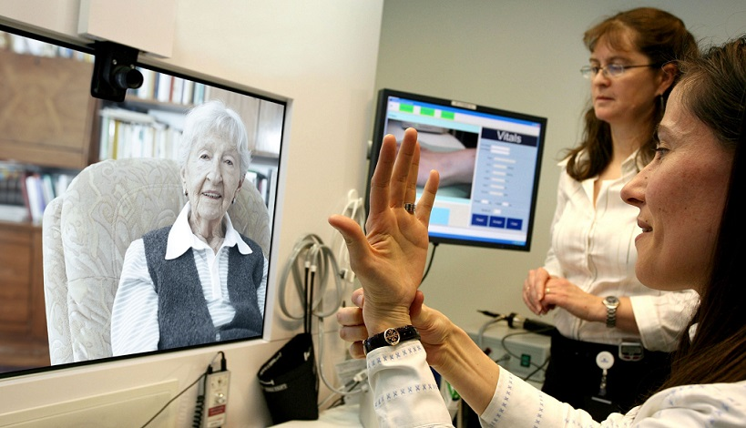
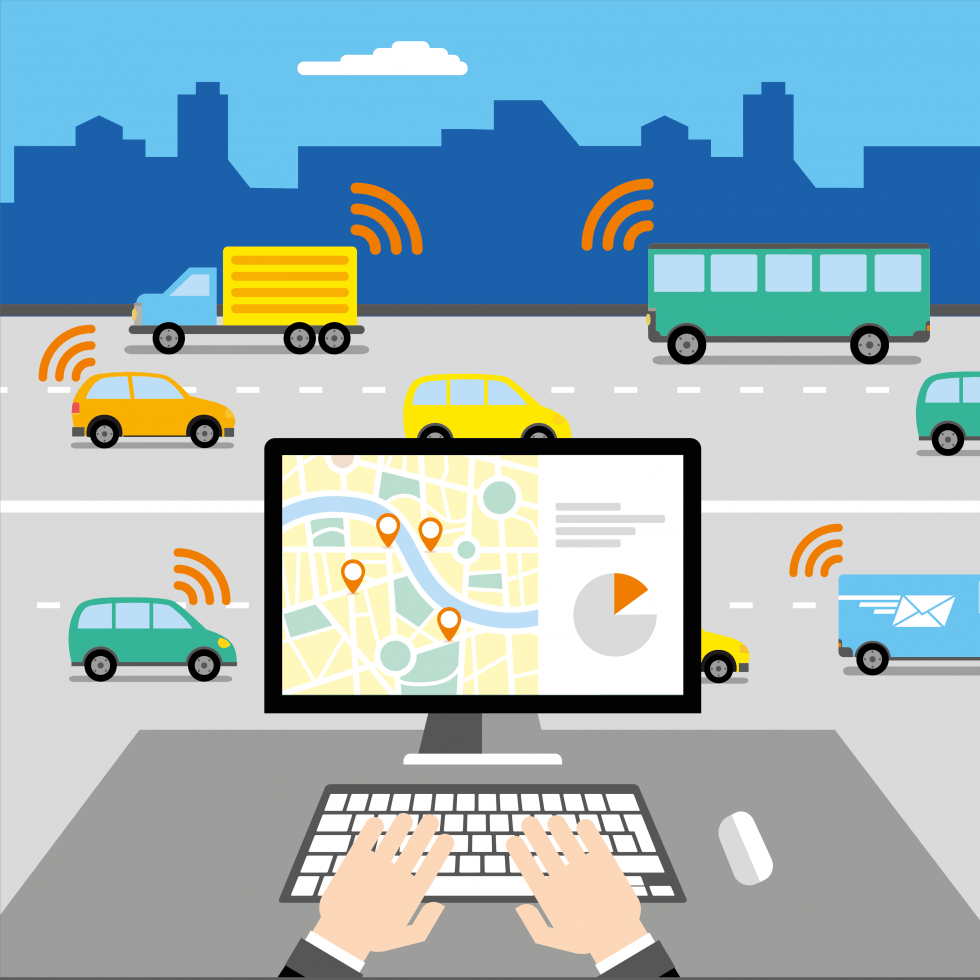
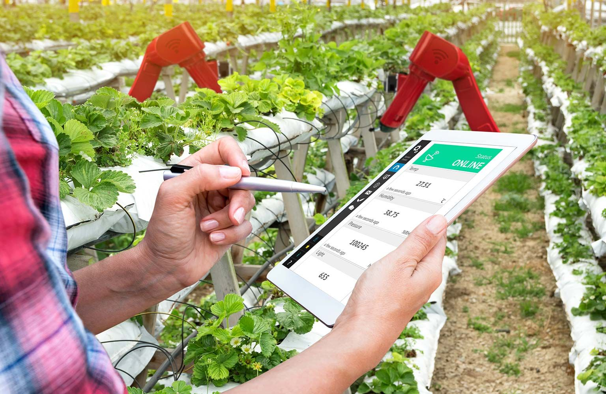

Applicition of internet of things
Links:
smart house:

IoT devices are a part of the larger concept of home automation, which can include lighting, heating and air conditioning, media and security systems. Long-term benefits could include energy savings by automatically ensuring lights and electronics are turned off.
A smart home or automated home could be based on a platform or hubs that control smart devices and appliances For instance, using Apple's HomeKit, manufacturers can have their home products and accessories controlled by an application in iOS devices such as the iPhone and the Apple Watch. This could be a dedicated app or iOS native applications such as Siri.This can be demonstrated in the case of Lenovo's Smart Home Essentials, which is a line of smart home devices that are controlled through Apple's Home app or Siri without the need for a Wi-Fi bridge. There are also dedicated smart home hubs that are offered as standalone platforms to connect different smart home products and these include the Amazon Echo, Google Home, Apple's HomePod, and Samsung's SmartThings Hub.In addition to the commercial systems, there are many non-proprietary, open source ecosystems; including Home Assistant, OpenHAB and Domoticz.
Elder care:

One key application of a smart home is to provide assistance for those with disabilities and elderly individuals. These home systems use assistive technology to accommodate an owner's specific disabilities. Voice control can assist users with sight and mobility limitations while alert systems can be connected directly to cochlear implants worn by hearing-impaired users. They can also be equipped with additional safety features. These features can include sensors that monitor for medical emergencies such as falls or seizures.Smart home technology applied in this way can provide users with more freedom and a higher quality of life.
The term "Enterprise IoT" refers to devices used in business and corporate settings. By 2019, it is estimated that the EIoT will account for 9.1 billion devices
Transportation:

The IoT can assist in the integration of communications, control, and information processing across various transportation systems. Application of the IoT extends to all aspects of transportation systems (i.e. the vehicle, the infrastructure, and the driver or user). Dynamic interaction between these components of a transport system enables inter- and intra-vehicular communication smart traffic control, smart parking, electronic toll collection systems, logistics and fleet management, vehicle control, safety, and road assistance. In Logistics and Fleet Management, for example, an IoT platform can continuously monitor the location and conditions of cargo and assets via wireless sensors and send specific alerts when management exceptions occur (delays, damages, thefts, etc.). This can only be possible with the IoT and its seamless connectivity among devices. Sensors such as GPS, Humidity, and Temperature send data to the IoT platform and then the data is analyzed and then sent to the users. This way, users can track the real-time status of vehicles and can make appropriate decisions. If combined with Machine Learning, then it also helps in reducing traffic accidents by introducing drowsiness alerts to drivers and providing self-driven cars too.
Medical and healthcare:
The Internet of medical things (IoMT) is an application of the IoT for medical and health related purposes, data collection and analysis for research, and monitoring. The IoMT has been referenced as "Smart Healthcare",as the technology for creating a digitized healthcare system, connecting available medical resources and healthcare services
IoT devices can be used to enable remote health monitoring and emergency notification systems. These health monitoring devices can range from blood pressure and heart rate monitors to advanced devices capable of monitoring specialized implants, such as pacemakers, Fitbit electronic wristbands, or advanced hearing aids. Some hospitals have begun implementing "smart beds" that can detect when they are occupied and when a patient is attempting to get up. It can also adjust itself to ensure appropriate pressure and support is applied to the patient without the manual interaction of nurses.A 2015 Goldman Sachs report indicated that healthcare IoT devices "can save the United States more than $300 billion in annual healthcare expenditures by increasing revenue and decreasing cost." Moreover, the use of mobile devices to support medical follow-up led to the creation of 'm-health', used analyzed health statistics."
Specialized sensors can also be equipped within living spaces to monitor the health and general well-being of senior citizens, while also ensuring that proper treatment is being administered and assisting people regain lost mobility via therapy as well.These sensors create a network of intelligent sensors that are able to collect, process, transfer, and analyze valuable information in different environments, such as connecting in-home monitoring devices to hospital-based systems. Other consumer devices to encourage healthy living, such as connected scales or wearable heart monitors, are also a possibility with the IoT. End-to-end health monitoring IoT platforms are also available for antenatal and chronic patients, helping one manage health vitals and recurring medication requirements.
Advances in plastic and fabric electronics fabrication methods have enabled ultra-low cost, use-and-throw IoMT sensors. These sensors, along with the required RFID electronics, can be fabricated on paper or e-textiles for wirelessly powered disposable sensing devices.have been established for point-of-care medical diagnostics, where portability and low system-complexity is essential.
As of 2018 IoMT was not only being applied in the clinical laboratory industry,but also in the healthcare and health insurance industries. IoMT in the healthcare industry is now permitting doctors, patients, and others, such as guardians of patients, nurses, families, and similar, to be part of a system, where patient records are saved in a database, allowing doctors and the rest of the medical staff to have access to patient information.Moreover, IoT-based systems are patient-centered, which involves being flexible to the patient's medical conditions.[citation needed] IoMT in the insurance industry provides access to better and new types of dynamic information. This includes sensor-based solutions such as biosensors, wearables, connected health devices, and mobile apps to track customer behaviour. This can lead to more accurate underwriting and new pricing models.
The application of the IoT in healthcare plays a fundamental role in managing chronic diseases and in disease prevention and control. Remote monitoring is made possible through the connection of powerful wireless solutions. The connectivity enables health practitioners to capture patient's data and applying complex algorithms in health data analysis.
Agriculture:

There are numerous IoT applications in farming such as collecting data on temperature, rainfall, humidity, wind speed, pest infestation, and soil content. This data can be used to automate farming techniques, take informed decisions to improve quality and quantity, minimize risk and waste, and reduce effort required to manage crops. For example, farmers can now monitor soil temperature and moisture from afar, and even apply IoT-acquired data to precision fertilization programs.
In August 2018, Toyota Tsusho began a partnership with Microsoft to create fish farming tools using the Microsoft Azure application suite for IoT technologies related to water management. Developed in part by researchers from Kindai University, the water pump mechanisms use artificial intelligence to count the number of fish on a conveyor belt, analyze the number of fish, and deduce the effectiveness of water flow from the data the fish provide. The specific computer programs used in the process fall under the Azure Machine Learning and the Azure IoT Hub platforms.
Military applications:
The Internet of Military Things (IoMT) is the application of IoT technologies in the military domain for the purposes of reconnaissance, surveillance, and other combat-related objectives. It is heavily influenced by the future prospects of warfare in an urban environment and involves the use of sensors, munitions, vehicles, robots, human-wearable biometrics, and other smart technology that is relevant on the battlefield
Living Lab:
Another example of integrating the IoT is Living Lab which integrates and combines research and innovation process, establishing within a public-private-people-partnership. There are currently 320 Living Labs that use the IoT to collaborate and share knowledge between stakeholders to co-create innovative and technological products. For companies to implement and develop IoT services for smart cities, they need to have incentives. The governments play key roles in smart cities projects as changes in policies will help cities to implement the IoT which provides effectiveness, efficiency, and accuracy of the resources that are being used. For instance, the government provides tax incentives and cheap rent, improves public transports, and offers an environment where start-up companies, creative industries, and multinationals may co-create, share common infrastructure and labor markets, and take advantages of locally embedded technologies, production process, and transaction costs. The relationship between the technology developers and governments who manage city's assets, is key to provide open access of resources to users in an efficient way.